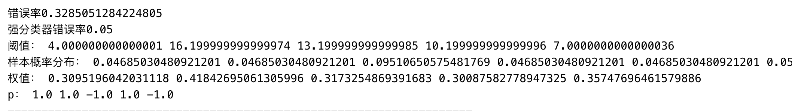

人脸识别系统
人脸识别的一般系统框架
如上图人所示，脸识别系统一般分为三部分：人脸检测、特征提取、人脸识别
人脸检测
指输入人脸图像后，对图像进行检测，提取出人脸所在区域。因为不同的照片不可能一致，因此对提取的人脸归一化，使得人脸区域与照片中的姿态、尺寸大小、旋转角度无关。
特征提取
计算机获取的人脸图像本质上就是连续的数字，不可能直接使用。要实现人脸识别，必须将人脸的图像特征转换为数字特征，给计算机提供识别的基础条件。特征提取的好坏直接影响了后续分类的结果，一个分类器的性能表现受到多中因素影响，主要依赖于采样图像数量、特征个数和分类器发复杂度。同时由于获取到的图像数据庞大，数据维度极高，因此需要比较大的计算处理时间，极大的影响了整个系统的性能。
因此特征提取分为三个步骤：
- 降低维度：所有人脸识别系统必不可少的一步。降低图像数据维度（PCA 等方法降维），减少不必要的计算量
- 特征提取：从人脸图像中提取特征。
- 特征算则：从提取的众多特征中，选取特征的最优化子集
人脸识别
系统从数据库中揭示同一性，包括：比对、分类算法和精确测量。若输入图像与数据库比对成功，则识别成功
Haar分类器
人脸检测的研究最早开始于 20 世纪 70 年代，当时对于人脸检测的研究方向少，主要是基于固定模版或可变模版的匹配方法及子空间分析两个大方向。目前的人脸检测方法发生了很大的改变，主要有基于知识和基于统计
- 基于知识：主要利用先验知识将人脸看做器官特征的组合，根据眼睛、鼻子、嘴巴等器官的特征以及相互之间的几何位置关系检测人脸，基于知识的人脸检测方法主要有：
- 模版匹配
- 人脸特征
- 形状与边缘
- 纹理特征
- 颜色特征
- 基于肤色的人脸检测
- 基于统计：将人脸看做二维像素矩阵，通过大量的训练样本构造人脸模式空间，以相似度作为判断的依据，主要方法有：
- 神经网络
- 统计知识理论
- 支持向量机
- 基于马尔科夫随机域
- PCA与特征脸
目前，人脸识别的方法主要是结合 Adaboost 学习方法和 Haar-like特征的 Haar 分类器算法。通过采集训练图片的 Haar-like 特征，训练多级的 Adaboost 分类器，对获取的图像归类，对人脸进行识别。
人脸姿态
人脸检测所采集到的图片质量层次不齐，人脸的姿态更是千差万别，不同的人脸姿态对于分类器的影响不可忽视。一般的人脸姿态有：正脸、微角度侧脸、较大角度侧脸
Haar-like 特征
Haar-like 特征在很多应用领域都有着广泛的应用，比如检测人脸、车辆、行人、表情等。最初是由 Viola 和 Jones 两位将基本 Haar 特征应用到人脸检测领域当中。基本 Haar 特征有三种类型：边缘特征、线性特征以及对角特征
- 边缘特征是计算相邻两个白色与黑色矩形区域像素总和的差分值反映了图像的边缘信息；
- 线特征是计算处于两边的两个外部的白色矩形区域的像素总和与中间单独黑色矩形区域像素总和的差分值，反映了图像线性方向上的信息；
- 对角特征是计算两条对角线上长方形内部像素总和的差分值，反映了图像整体的信息；
模版特征值计算
- 模板 a 的特征值计算公式为： v=Sum黑-Sum 白。
- 模板 bl 的特征值计算公式为： v=Sum黑-Sum 白。
- 模板 br 的特征值计算公式为： v=2*Sum黑-Sum 白。 （保证做差时像素的数目相等，将 Sum黑乘以 2）
- 模板 c 的特征值计算公式为： v=Sum黑-Sum 白。
后来 Rainer 等人对Haar-like 特征进行了拓展，引入了中心环绕特征及原本特征的 45° 旋转特性，如下图所示
扩展后的 Haar-like 特征集的特征组合更多，扩大了特征空间，扩展了识别目标的范围，提高了识别的精度。
通过正样本图像矩阵的大小可以计算出图像中 Haar 特征存在的数量。用特征模版在图像窗口内随意滑动，找出图像中所有子窗口的Haar-like 特征训练弱分类器。
矩阵特征可位于图像任意位置，大小也可以任意改变，所以矩形特征值是矩形模板类别、矩形位置和矩形大小这三个因素的函数。故类别、大小和位置的变化，使得很小的检测窗口含有非常多的矩形特征。下面给出计算特征数量的公式
对于Upright rectangle，设图像宽度为 W，高度为 H, w 和 h 分别为 Haar-like 特征的宽度和高度，X 为矩形特征 x 方向上最大的比例系数，Y 为 y 方向上最大的比例系数, 则 X 与 Y的计算值分别为: X=[W/w],Y=[H/h].
\[ \begin{equation} Rotated\ rectangle\ 特征数 = X*Y*(W+1-w*\frac{X+1}{2})*(H+1-h*\frac{Y+1}{2}) \end{equation} \]
上述公式可以理解为：
特征框竖直放大1倍，即无放大，竖直方向有(H-h+1)个特征
特征框竖直放大2倍，竖直方向有(H-2h+1)个特征
特征框竖直放大3倍，竖直方向有(H-3h+1)个特征
如此到竖直放大Y=floor(H/h)倍，竖直方向有1个特征，即(H-Y*h+1)
那么竖直方向总共有
(H-h+1)+(H-2h+1)+(H-3h+1)+......+(H-Y*h+1)=Y[H+1-h(1+Y)/2]个特征。同理在水平方向有X(H+1-w*(1+X)/2)由于水平方向与竖直方向的放缩是相互独立的，因此可以得到上式
对于 45° rotated rectangle，设图像宽度为 W，高度为 H, w 和 h 分别为 Haar-like 特征的宽度和高度，特征宽度与高度均为 z=w+h，比例系数X = ⌊W/z⌋,Y=⌊H/z⌋**
\[
Rotated\ rectangle特征数 = X*Y*(W+1-z*\frac{X+1}{2})*(H+1-z*\frac{Y+1}{2})
\]
例：在24*24像素大小的图像子窗口有超过18万个矩形特征，这个数字远远大于像素数。而每次计算图像特征值都要统计矩形窗口内所有像素值的和来计算特征值，即使每个特征都可以非常有效地计算，但计算完整集的代价十分昂贵。 最直接的解决方法就是用内存换取速度，把计算过的值保存起来，避免大量的重复计算。同时Paul Viola等人通过实验证明，只需要这些特征中的很小一部分就可以组合成一个有效的分类器。 主要的挑战是找到这些特征。
积分图
在计算 Haar-like 特征值时，由于每次计算都要统计矩形窗口中的全部像素点，而普通的照片有大量的 Haar-like 特征，这直接导致了计算机需要做巨量的计算。针对这个问题 Viola 等人提出了使用积分图的方法加速特征值的计算。
积分图思想：首先对图像进行预计算，从图像原点开始，计算每个像素到原点形成的矩形区域的像素和，再在内存中创建一维数组，将该像素点相对坐标转化为一维坐标作为数组索引，并将所求得的像素和存入对应数组中。故需要计算某个 Haar-like 特征时，无需计算矩形区域内的像素和，直接从预选存储的数组中查找对应索引即可。积分图本质上是一种查表算法，采取利用空间换取时间复杂度的方法降低计算量，使得仅需要对图像进行一次遍历和少量计算即可得到任意位置的 Haar-like 的特征值，大大提升了求取特征值的速度。
积分图计算公式：积分图计算目标像素点与图像原点所组成的矩形区域的所有像素值和，计算公式如下
\[ ii(x,y) = \sum^{x}_{k=0}\sum^{y}_{l=0}f(k,l) \]
其中，ii（x，y） 表示点（x，y）的积分图值，f（k，l）表示点（k，l）的像素值。
设 \[ii(-1,-1)=0,ii(0,-1)=0, ii(-1,0)=0\] ，则可递归计算 \[ii(x,y)\]，公式如下，故计算任一点的积分图值变得极其简单，只需进行3次查表，时间复杂度为O(1)。 \[ ii(x,y) = i(x,y) + ii(x,y-1)+ii(x-1,y) -ii(x-1,y-1) \] 积分图构建算法：
1）用s(i,j)表示行方向的累加和，初始化s(i,-1)=0;
2）用ii(i,j)表示一个积分图像，初始化ii(-1,i)=0；
3）逐行扫描图像，递归计算每个像素(i,j)行方向的累加和s(i,j)和积分图像ii(i,j)的值 \[ s(i,j)=s(i,j-1)+f(i,j) \]
\[ ii(i,j)=ii(i-1,j)+s(i,j) \]
4）扫描图像一遍，当到达图像右下角像素时，积分图像ii就构造好了。
例：计算图中 D 区域面积
如图，图中分为A，B，C，D 四个区域及 a，b，c，d 四个点。点 a 与原点形成的矩形区域像素和为 \[ii(a)\] ，点 b 与原点形成的矩形区域像素和为 \[ii(b)\]，点 c 与原点形成的矩形区域像素和为 \[ii(c)\]，点 d 与原点形成的矩形区域像素和为 \[ii(d)\]。区域A的像素值和为\[ii(a)\]，区域B的像素值和为\[ii(B) = ii(b)-ii(a)\]，区域C的像素值和为 \[ii(C) = ii(c)-ii(a)\]，区域D的像素值和为\[ii(D) = ii(d)-ii(A)-ii(B)-ii(C)=ii(d)-ii(c)-ii(b)+ii(a)\]。无论矩形的尺寸大小，只需要查找积分图像4次就可以求得任意矩形内像素的和。对于 haar-like 基本特征来说，边缘特征需要查找积分图像6次、线性特征需要查找积分图像8次、对角特征需要查找积分图像9次。
同时，使用积分图使得在不同尺度上同时进行矩形特征的计算时间复杂度达到了常数级。物体在不同尺度下，有着不同的结构。这就表明，我们如果从不同的尺度去观察同一个物体，会得出不一样的结果。当计算机系统要对一个未知的场景进行分析时，并不能够提前预知要用什么样的尺度来对图像信息中的兴趣结构（interesting structures）进行描述才是最合适的。因此，唯一可行的方案就是将多个不同尺度的描述都考虑进来，以便捕获未知的尺度变化。为了检测图像中不同尺度大小的目标，必须对图像进行多尺度扫描。积分图弥补了图像金字塔降采样计算量大的缺点。
AdaBoost 级联算法
AdaBoost 算法由 Freund 和 Schapire 于1996年前后提出，是一个实际可用的自适应Boosting算法，并证明了AdaBoost 分类器的准确率在经过多次的训练后几乎为 1。AdaBoost 算法 Boosting 算法改进而来，弥补了 Boosting 算法的缺陷。AdaBoost 算法最早可追溯到上世纪80年代，由 Valiant 提出的概率近似正确（probably approximately correct，PAC）计算学习理论模型。Valiant 认为所谓学习就是与模式无关的获取知识的过程，即模式清晰的与否不影响知识的获取的一种过程。PAC 理论模型就是从计算角度获取该过程的一种方法，实质就是在样本训练的基础上，使算法的结果以概率接近未知的目标。PAC模型将学习的评判转化为形式化的概率。基于PAC学习模型，Valiant提出了Boosting算法。
Boosting算法是一种常用的统计学方法，基于思想：对于一个复杂任务来说，适当的综合多个专家的判断所得出的判断，要比其中任何专家的独断好。在分类问题中，它通过改变训练样本的权重，学习多个分类器，并将这些分类器进行线性组合，达到提高分类性能的目的。1990年，Schapire提出了第一个时间复杂度为多项式的 Boosting 算法。1991年，Freund 又提出了一个效率更高的Boosting算法，至此Boosting算法取得可观的效率提升。Boosting 算法还涉及弱可学习和强可学习的概念，弱学习就是指对目标类的学习算法的正确率仅比随机识别的正确率好一点；强学习与弱学习相对，其正确率要远高于随机分类。但强学习算法的设计难度要远远高于若学习算法，对此 Kearns 和Valiant 提出了弱学习和强学习等价的理论，并证明了只要有足够的样本数据，弱学习算法就能通过集成的方式，构成任意高精度的强学习方法。虽然 Boosting 算法得到了广泛验证和使用，但仍存在着几个主要的问题：
- Boosting算法需要预先知道弱学习算法正确率的下限，即弱分类器的误差。
- Boosting算法可能导致后来的训练过分集中于少数特别难区分的样本。
针对Boosting的上述缺陷，Freund和Schapire于1996年前后提出了一个实际可用的自适应 Boosting 算法 AdaBoost。AdaBoost目前已发展出了大概四种形式的算法：Discrete AdaBoost（AdaBoost.M1）、Real AdaBoost、LogitBoost、gentle AdaBoost，基本思想都是根据 Kearns 和Valiant 提出的弱强学习等价理论，通过对若干弱分类其进行线性组合，构建出强分类器。
弱分类器的构建
弱分类器可以是一个基本的 Haar-like 特征值，将此特征值作为阈值与输入样本图像的 Haar-like 的特征值对比，输出结果。而这种分类器的正确率可能并不比随机判断的效果更好，因此需要对弱分类器进行训练和学习。在人脸检测的过程中，输入的人脸图像在不同尺寸的特征窗口所计算得到的 Haar-like 特征都可以作为阈值分类函数，对弱分类器的训练就是使用阈值分类函数对样本进行分类的过程。尽管弱分类器的效果不尽人意，我们仍然需要让弱分类器获取到最佳分类函数，使得其分类的正确率最大。弱分类器可以用如下数学语言定义 \[ h_j(x) = \left\{\begin{matrix} 1\ \ \ \ \ \ if\ p_jf_j(x)<p_j\theta_j\\ 0\ \ \ \ \ \ \ \ \ \ \ \ \ \ \ \ otherwise \end{matrix}\right. \] \[h_j(x)\]代表弱分类器，\[p_j\]代表不等号方向，\[f_j(x)\]代表第j个特征，\[\theta_j\]代表判断特征j的阈值。当样本小于阈值，为正样本输出为1；当样本大于阈值，为正样本输出为0。一个弱分类器可以看做是一棵决策树，非叶子节点代表某个对象，分叉路径代表可能的属性值，叶节点代表一种类别。一个完整的弱分类器包括：
- 若干个 Haar 特征和对应阈值
- 若干 leftValue 和 若干 rightValue
最基本的弱分类器可以只有 一个 Haar 特征
训练最优的弱分类器就是对阈值不断筛选的过程，使得分类器对所有样本的分类误差最小。
阈值的选择往往根据正负样本的特征值分布选择，若样本数量足够多，其特征值分布符合正态分布，可以根据样本均值和样本方差近似得到其正态分布曲线。计算公式给出如下： \[
\mu = \frac{1}{n}\sum^N_{j=1}f(j)
\]
\[ S=\frac{1}{N-1}\sum^N_{j=1}(f(j)-\mu)^2 \]
\[f(j)\]代表第j个样本特征，\[\mu\]代表样本均值，\[S\]代表样本方差，\[N\]代表样本数量
弱分类器训练过程如下：
- 计算所有训练样本的特征\[f_j(x)\]的值，并将其排序，扫描一遍排好序的特征值，对排好序的表中的每个元素，计算下面四个值：
全部人脸样本的权重的和 \[t_1\]；
全部非人脸样本的权重的和 \[t_0\]；
在此元素之前的人脸样本的权重的和 \[s_1\]；
在此元素之前的非人脸样本的权重的和 \[s_0\]；
- 选取当前元素的特征值 \[F_j\]和它前面的一个特征值 \[F_{j-1}\]之间的数作为阈值，所得到的弱分类器就在当前元素处把样本分开 —— 也就是说这个阈值对应的弱分类器将当前元素前的所有元素分为人脸（或非人脸），而把当前元素后（含）的所有元素分为非人脸（或人脸）。该阈值的分类误差为：
\[ r=min(s_1+(t_0-s_0),s_0+(t_1-s_1)) \] 在表中寻找 r 值最小的元素，则该元素作为最优阈值，得到了一个最优弱分类器。
强分类器的构建
AdaBoost 算法是前向分步加法算法的特例，由基本分类器组成的加法模型。它将大量的弱分类器以某种规则进行组合为强分类器，不同的分类器赋予不同的权值，分类性能越好则权值越大。
算法
设样本集\[S={(x_1,y_1),(x_2,y_2),...,(x_N,y_N)}\]，其中实例空间 \[x\in X、X\in R^n\]，对于回归问题，\[y_i\in Y=\{0,1\}\]，对于分类问题，\[y_i\in Y=\{1,-1\}\]，共有N个样本，正样本数为m，负样本数为n，最大循环次数为 T。
假设样本数据集具有均匀的权值分布，初始化训练数据的权值分布为\[D_1\]，每个训练样本初始赋予相同权值 \[\frac{1}{N}\]
进行多轮迭代，每次迭代获得一个最优弱分类器，m = 1，2，···，M 表示迭代的轮数
使用具有权值分布 \[D_m\] 的训练数据集学习，选取使误差率最低的阈值，得到基本分类器 \[h_m(x)\]
计算 \[h_m(x)\] 在训练数据集上的分类误差，即被 \[h_m(x)\] 误分类的样本权值之和。
对于AdaBoost二元分类问题
- 分类误差为，这里的 \[I(x)\]为示性函数，体现事件 x 发生与否与0,1两值函数的对应关系
\[ \varepsilon_m = P(h_m(x_i)≠y_i) = \sum^N_{i=1}w_{m,i}I(h_m(x_i)≠y_i) \]
- 计算\[h_m(x)\] 的系数 \[\alpha_m\]，表示在最终分类器中所占的权重。由式可知，\[\alpha_m\]随着\[\varepsilon_m\]的减小而增大，意味着分类误差率越小的弱分类器在最终分类器中的作用越大
\[ \alpha_m=\frac{1}{2}log\frac{1-\varepsilon_m}{\varepsilon_m} \]
- 更新训练数据集的权值分布，用于下一轮迭代。使得被若分类器\[f_m(x)\]分类错误的样本权值增大，正确分类的样本权值减小，分类错误的样本权值相较于分类正确的样本权值放大了\[exp(2\alpha_m)\]倍
\[ 𝑤_{m+1,𝑖}=\frac{𝑤_{m,𝑖}}{𝑍_m}𝑒𝑥𝑝(−𝛼_m𝑦_𝑖h_m(𝑥_𝑖))\\ Z_m = \sum^N_{i=1}w_{m,i}𝑒𝑥𝑝(−𝛼_m𝑦_𝑖h_m(𝑥_𝑖)) \]
对于AdaBoost回归问题
设\[h_m(x)\]在训练集的最大误差为\[E_m\]，每个样本的相对误差为\[\varepsilon_{mi}\] \[ E_m = max|y_i-h_m(x_i)|\ \ \ \ \ i=1,2,...,N \\ 误差损失为线性时，\varepsilon_{mi} = \frac{|h_{mi}(x_i)-y_i|}{E_m} \\ 误差损失为指数时，\varepsilon_{mi} = 1-exp(\frac{-y_i+h_m(x_i)}{E_m}) \\ 第m个弱分类器误差，\varepsilon_m=\sum^N_{i=1}w_{m,i} |h_i-y_i| \]
弱分类器权值系数 \[ \alpha_m=\frac{\varepsilon_m}{1-\varepsilon_m} \]
更新训练数据集的权值分布，用于下一轮迭代。使得被若分类器\[f_m(x)\]分类错误的样本权值增大，正确分类的样本权值减小
$$ D_{m+1} = (w_{m+1,1},w_{m+1,2},...,w_{m+1,N}) \
\\ w_{m+1,i} = \frac{w_{m,i}}{Z_m}\alpha^{1-\varepsilon_{m,i}}_m\ \ \ \ \ \ \ \ \ ，其中i=1,2,...,N ,\\ \ 规范因子，Z_m=\sum^N_{i=1}w_{m,i}\alpha^{1-\varepsilon_{m,i}}_m$$
Adaboost分类采用的是加权表决法，最终的强分类器为 \[ 组合各个弱分类器，\ \ 𝑓(𝑥)=(\sum^N_{m=1}𝛼_mh_m(𝑥)) \\ 最终分类器，\ \ h(x) = sign(f(x)) \]
- Adaboost回归采用的是对加权的弱学习器取权重中位数对应的弱学习器作为强学习器的方法
\[ h(x)=\left\{\begin{matrix} 1\ \ \ \ \ \ if \ \sum^N_{m=1} \alpha_mh_m(x) \geq\frac{1}{2}\sum_{m=1}^{N}\alpha_m \\ 0\ \ \ \ \ \ \ \ \ \ \ \ \ \ \ \ \ \ \ \ \ \ \ \ \ \ \ \ \ \ \ \ \ \ \ \ \ \ \ \ \ \ \ \ \ \ otherwise \end{matrix}\right.\\ 其中，\alpha_m = log\frac{1}{\beta_m} \]
AdaBoost 算法的训练误差分析
设AdaBoost 算法的误差为 Error，值为分错的样本个数与样本总体N的比值，形式化表达为 \[ Error = \frac{1}{N}\sum_{i=1}^NI(h(x_i)≠y_i ) \]
AdaBoost 训练误差界
设共有M个弱分类器，f(x)为组合的弱分类器，且\[f(x_i)=\sum^M_{m=1}\alpha_mh_m(x_i)\]. \[ Error ≤\frac{1}{N} \sum_i^Nexp(-y_i f(x_i)) ≤\prod_{m=1}^MZ_m \] 下面给出证明
对于\[Error ≤\frac{1}{N} \sum_i^Mexp(-y_i f(x_i))\]，转化为\[I(h(x_i)≠y_i )≤exp(-y_i f(x_i))\].
1）当 \[I(h(x_i)≠y_i )=0\]时，\[h(x_i)=y_i , \ \ exp(-y_i f(x_i))>0\]
2）当 \[I(h(x_i)≠y_i )=1\]时，\[|h(x_i)|=| y_i|，h(x_i)*y_i=-1\]，故 \[exp(-y_i f(x_i))>1\]
得证.
对于\[\sum_i^Mexp(-y_i f(x_i)) ≤\prod_{m=1}^MZ_m\]
1）由\[w_{m+1,i}=\frac{w_{mi}}{Z_m}exp(-\alpha_m y_i h_m (x_i))\]可得 \[ w_{m+1,i}=\frac{w_{mi}}{Z_m}exp(-\alpha_m y_i h_m (x_i))=\frac{w_{m-1,i}}{Z_mZ_{m-1}}exp(-\alpha_{m-1} y_i h_{m-1} (x_i))exp(-\alpha_m y_i h_m (x_i))=\\ \frac{w_{m-2,i}}{Z_mZ_{m-1}Z_{m-2}}exp(-\alpha_{m-2} y_i h_{m-2})exp(-\alpha_{m-1} y_i h_{m-1} (x_i))exp(-\alpha_m y_i h_m (x_i))=···\\=\frac{w_{1i}}{\prod^M_{j=1}Z_j}exp(-y_i\sum^M_{m=1}\alpha_mh_m(x_i)) \] 2）有\[\sum^N_{i=1}w_{m,i}=1，且 w_{1,i}=\frac{1}{N}\]，所以 \[ \sum^N_{i=1}w_{m+1,i}=\frac{1}{N}\sum^N_{i=1}\frac{exp(-y_i\sum^M_{m=1}\alpha_mh_m(x_i))}{\prod^M_{m=1}Z_m}=1\\ 即，\ \ \frac{1}{N}\sum^N_{i=1}exp(-y_i\sum^M_{m=1}\alpha_mh_m(x_i))) = \prod^M_{m=1}Z_m\\ 又，f(x_i)=\sum^M_{m=1}\alpha_mh_m(x_i)，\ \ 故\ \ \frac{1}{N}\sum^N_{i=1}exp(-y_if(x_i))) = \prod^M_{m=1}Z_m \] 每一轮选取适当的弱分类器\[h_m(x)\]使得\[Z_m\]最小，可以加快训练误差的下降速度
AdaBoost的二分类问题训练误差界
\[ Z_m≤ exp{\left(-2\sum_{m=1}^M\gamma_m^2\right)} ≤ exp(-2M\gamma^2)\\ 其中，\gamma_m = \frac{1}{2} - \varepsilon_m, \ \ 误差下限\ \gamma=min\{\gamma_1, \gamma_2, ... , \gamma_M\} > 0 \]
证明 \[ Z_m = \sum_{i=1}^Nw_{mi}exp(-\alpha_m y_i h_m (x_i)) = \sum_{y_i=G_m(x_i)}w_{mi}exp({-\alpha_m}) + \sum_{y_i≠G_m(x_i)}w_{mi}exp(\alpha_m)=(1-\varepsilon_m)exp(-\alpha_m)+\varepsilon_mexp(\alpha_m)\\ 已知，\ \ \alpha_m=\frac{1}{2}log\frac{1-\varepsilon_m}{\varepsilon_m}，\ \ 则\ \ exp(\alpha_m)=\sqrt{\frac{1-\varepsilon_m}{\varepsilon_m}}\\ 令 \ \ \gamma_m=\frac{1}{2}-\varepsilon_m， \ \ Z_m = (1-\varepsilon_m)\sqrt{\frac{\varepsilon_m}{1-\varepsilon_m}}+\varepsilon_m\sqrt{\frac{1-\varepsilon_m}{\varepsilon_m}}=2\sqrt{\varepsilon_m(1-\varepsilon_m)}=\sqrt{1-4(\frac{1}{2}-\varepsilon_m)^2}=\sqrt{1-4\gamma_m^2}\\ 有泰勒公式 1-x ≤ exp(-x),\ \ Z_m = \sqrt{1-4\gamma_m^2}≤exp(-2\gamma_m^2)\\ 即，\ \ \prod^M_{m=1}Z_m ≤ exp(-2\sum^M_{m=1}\gamma_m^2)≤ exp(-2M\gamma^2)\ \ \ \ \ \ \ \ \ \ \gamma=min\{\gamma_1,\gamma_2,...,\gamma_M\}>0 \] 该式表明，对于二分类问题，AdaBoost 算法的训练误差以指数速度下降，其次 AdaBoost 算法的自适应决定了它能适应各弱分类器的误差率，不需要预先知道误差下限
案例：
Java语言模拟 AdaBoost 算法，对样本 Samples 进行分类
| X | 0 | 1 | 2 | 3 | 4 | 5 | 6 | 7 | 8 | 9 | 10 | 11 | 12 | 13 | 14 | 15 | 16 | 17 | 18 | 19 |
|---|---|---|---|---|---|---|---|---|---|---|---|---|---|---|---|---|---|---|---|---|
| Y | 1 | 1 | -1 | 1 | 1 | -1 | -1 | -1 | 1 | 1 | 1 | -1 | -1 | -1 | 1 | 1 | 1 | -1 | -1 | -1 |
训练结果如下图，阈值为各个弱分类器学习到的阈值，权值对应弱分类器在强分类器中的比重，p 代表弱分类器的不等号方向，最终的强分类器分类错误仅为 0.05。

代码实现如下：
1 | public class AdaBoost { |
级联分类器的构造
Haar 分类器包括训练和检测两部分，检测体系以现实中的照片为输入，对图片进行多区域多尺度的检测。由于训练的照片像素有明确的统一要求，因此要对图像进行区域的划分，使得符合训练的要求。但成相原理表明近距离的物体尺度大，远距离的物体尺度小，这就造成了现实拍摄的照片人脸大小不一，因此要对照片进行多尺度的扫描。扫描的方法一般有两种，一种是保持搜索窗口大小不变，不断对图片进行多尺度放缩，形成图像金字塔，再进行局部特征值的计算，效率较低。另一种是放缩窗口，先对扫描窗口初始化，再不断地扩大。以上两种扫描方法都会产生大量的子图像作为分类器的输入。
上述我们通过AdaBoost 算法构建出了一个强分类器，但在现实生活中，人脸识别的场景更加复杂，人们对识别的准确率要求更高。仅靠一个强分类器显然远不能达到现实应用的标准。
总结
- 在Adaboost训练过程中，Adaboost会使得难于分类样本的权值呈指数增长，训练将会过于偏向这类困难的样本，导致Adaboost算法易受噪声干扰。此外，Adaboost依赖于弱分类器，而弱分类器的训练时间往往很长。
- Adaboost算法*不需要弱分类器的先验知识，最后得到的强分类器的分类精度依赖于所有弱分类器。无论是应用于人造数据还是真实数据，Adaboost都能显著的提高学习精度*。
- Adaboost算法不需要预先知道弱分类器的错误率上限，且最后得到的强分类器的分类精度依赖于所有弱分类器的分类精度，可以深挖分类器的能力。Adaboost可以根据弱分类器的反馈，自适应地调整假定的错误率，执行的效率高。